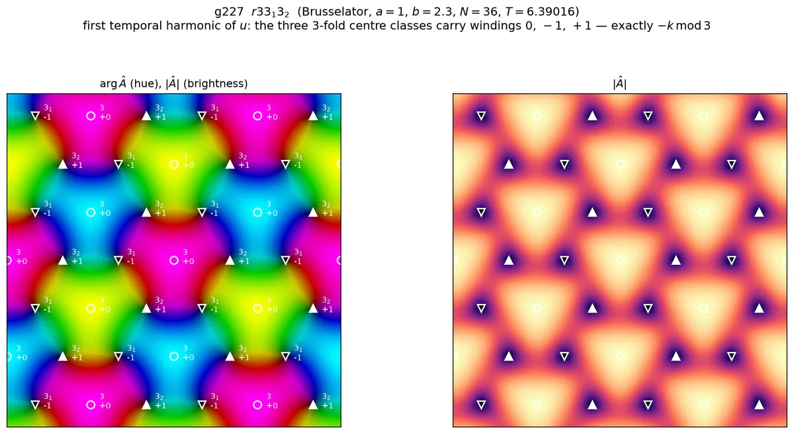
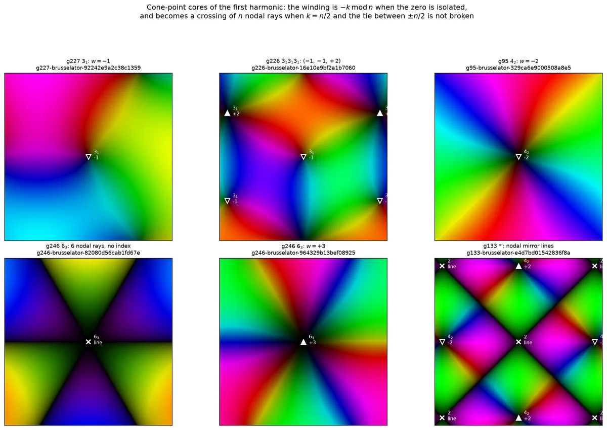

Animated groups · reports · clockwork orbits
How to find a time-symmetric animation
That animation is periodic in time, with period T = 6.390159918584649, and it obeys nine relations at once: turn the picture by 120° about one of its 3₁ centres and you get the same animation a third of a period later, while a turn about one of its plain threefold centres leaves every frame exactly as it was. An agent produced it in a 54-second job on a two-core cloud machine on 7 September 2026, from two inputs — the clockwork symbol r33₁3₂ and the local rule of a reaction–diffusion equation. How did it get from those to this, and how would a person do the same?
The short answer. The symbol picks out a single character of the group, and that character admits only three plane waves out of the six shortest; adding them up draws the finished picture before any equation has been touched. What is left is to solve one equation in one state and one number — Sg ΦT/3(q0) = q0 — which Newton's method does in 5 steps, and which a browser does in about 1.6 seconds. Or, if you would rather simulate than solve: glue the fundamental domain to its own past, and the same orbit stops being a saddle and becomes something the simulation falls into on its own.
Four symbols, defined once, used throughout.
- q(x, t) is the two-species state, q = (u, v); u is the channel every figure plots, and every statement about u holds channel by channel. q0 = q(·, 0) is one frame of it, one number per mesh node per species.
- Φs is the time-s flow of the discretised equation: integrate the state forward by s and return what you get.
- Sg is the permutation of mesh nodes induced by the symmetry g, (Sgq)(x) = q(g−1x). The g in the equation above is a generator with τg = 1/3.
- F(q, T) := Sg ΦT/3(q) −
q is the twisted shooting residual, and F = 0 is the equation the whole page
is about. In the equivariant-dynamics literature its solutions are relative periodic
orbits; the repository's own routine is called
rpo_polish.
- If you build simulators
- Born as an eigenfunction — at onset this really is a stationary eigenproblem, and the analogy's limits are stated; A fundamental domain that remembers — the change a fundamental-domain simulator with glued edges would need, which is a history buffer and nothing else.
- If you read orbifolds
- A magic theorem for clockwork animations — Conway's cost balances the geometry; a second residue, from the same orbifold relation, balances the choreography.
- If you write solvers
- Is there a fifth dimension? — whether all the frames are computed together, answered three ways, including the one that literally did it and failed.
The constraint, in a simulator's language#
A simulator like SymSim draws a wallpaper pattern by integrating a reaction–diffusion equation on one fundamental domain and gluing that domain's edges to copies of itself. Every symmetry of the group is then true of every frame separately. A clockwork group asks for something weaker and much more interesting: the symmetry is allowed to cost time.
u(g x, t + τgT) = u(x, t) for every g in the group, every point, every instant.
Each symmetry g carries a fraction of the period τg. The symmetries with τ = 0 hold frame by frame — they are the ones a fundamental-domain simulation can impose directly, and they form a subgroup, the kernel. The rest hold only of the movie as a whole. Applying the relation to a composition hg shows that τ is a homomorphism from the group to ℝ/ℤ, so — granted that its image is finite, which is what the catalogue encodes and what a rotation forces — the quotient by the kernel is cyclic; for g227 it is cyclic of order 3. That is the same data as a colour group whose colour permutation is cyclic, with colours replaced by time offsets — which is why every entry of this catalogue appears on the correspondence pages in exactly that form: correspondence-p3.html#g227.
Dividing the plane by g227 — by its rotations and its translations — gives Conway's 333 orbifold: a turnover, which is a sphere with three cone points of order three. The clockwork symbol r33₁3₂ decorates those cone points with their time offsets: one turn costs nothing, one costs a third of a period, one costs two thirds. That decorated orbifold, plus the choice of equation, is the entire specification.

A note on conventions, because it decides every sign below. The catalogue's convention is
q(Mx + v, t + τT) = q(x, t), and the offsets are stored as fractions of the
unknown period. The period is therefore not a parameter you set; it is an unknown you solve
for, and it is the only extra unknown the clockwork constraint introduces.
How big is the box? The symbol says
One more thing the symbol decides, and it settles every count on this page. The leading r of r33₁3₂ is a centring of the space–time lattice: g227 contains a translation by a third of a cell that also waits a third of a period. Its square, the (1/3, 2/3) translation with τ = 2/3, is the one that does all the work in step 2 below.
The field is invariant under the kernel and no more, and the kernel meets the translation lattice in a sublattice of index 3. So the simulation box cannot be g227's own unit cell; it has to be three of them. That is why the drawn cell — 36 × 36 nodes on a side of 40 — carries nine threefold centres in three classes of three, where one primitive cell holds three centres in three classes of one, and nine operations where the orbifold shows three. Two pinned vortices per primitive cell; six on the screen.
Two words, used consistently from here on. The p3 cell is g227's own primitive cell: three threefold centres, the cell Theorem C's budget is written over. The box is the simulation cell on the screen, three p3 cells, nine centres, six of them charged. Every count in the box is three times the orbifold count.
Why you cannot just simulate it#
The obvious method is to run the equation forward on a fundamental domain with glued edges and wait. It does not work, and the reason is worth measuring rather than asserting.
Take the published orbit itself — the exact answer — and perturb it only by the round-off of writing it to single precision. Integrate forward on the g227 torus with the τ = 0 part of the symmetry imposed at every step, which is exactly what a fundamental-domain simulator does — though on a larger domain than the one the glue section uses later: the kernel's own fundamental domain is 434 of the box's 1296 nodes per species, almost exactly three times the 146-node domain of the full group. The orbit leaves.
The killer detail is not that the orbit is unstable; it is which way it is unstable. The leading unstable eigenvector is itself symmetric under the τ = 0 operations. Confining the simulation to the fundamental domain does not delete the growing direction, because the growing direction lives inside the fundamental domain's own subspace. The simulation ends on the spatially uniform limit cycle: every cell oscillating in unison, no spirals, no screws, and a picture with no structure at all.
There is a reason it must be this way, and it is visible further down this page. The uniform state loses stability at b = 2; the g227 pattern is not born until bc = 2.065630506987. A branch that bifurcates from an equilibrium which is already unstable inherits that instability, so the patterned orbit is a saddle from birth — and the direction it inherits is the spatially uniform one, which is invariant under every operation of the group and therefore lies inside the τ = 0 kernel. That is exactly the measured leading eigenvector, and exactly the state the simulation ends on. The measurement confirms an argument rather than replacing one. It also covers the survey: every published Brusselator record sits above b = 1 + a², where the uniform cycle already exists.

It is not a peculiarity of this one orbit, as the figure above records, and the two honest denominators in its caption matter: a count of records is not a count of orbits. Two claims are worth keeping apart here. That the τ ≠ 0 relations are not constraints on a single state is structural: it holds for any equation, and it is why forward integration has nothing to hold on to. That the resulting orbits are unstable is empirical, measured on these records and explained above for this equation. What both mean in practice is the same: any method built on running the equation forward and waiting will fail here for a reason that has nothing to do with how long you wait.
One sentence is worth keeping for the rest of the page: Newton's method works here not because it is cleverer, but because the equation F(q0, T) = 0 never asks whether its solution attracts.
A magic theorem for clockwork animations
Before any solver is started, the symbol alone decides a great deal about the picture: which points must be dark, how much phase must wind around each of them, and how the windings must balance across a cell. What follows is that statement, proved, and then tested against every animation the project has published. It is deliberately arranged the way Conway's Magic Theorem is arranged — a closure identity that the orbifold forces, and a topological budget that the identity makes satisfiable.
The data: a clockwork group
A clockwork animation is a field u(x, t) on the plane, periodic in time with period T, together with a wallpaper group G and a map τ assigning to each symmetry a fraction of the period, such that
Apply the relation twice, once at gx and once at x, and τhg = τh + τg drops out: τ is a homomorphism G → ℝ/ℤ, the modulo coming from T-periodicity. That single fact carries the whole theorem. Two consequences are worth naming at once. Its kernel K = ker τ is the subgroup of instantaneous symmetries — the ones that hold frame by frame — and the quotient G/K embeds in ℝ/ℤ. It is not automatic that it is finite: a travelling wave u(x, t) = f(k·x − ωt) satisfies the defining relation for every lattice translation with τ generically irrational, and then the image of τ is dense. Finiteness is an assumption here, and it is the one the catalogue encodes; for a group with a rotation it is also forced, because invariance of τ on the translations under an order-n rotation clears the denominators. Granted finiteness, a finite subgroup of ℝ/ℤ is cyclic, so G/K is cyclic of some order m.
This is the same data as a colour group whose colour permutation is cyclic: a wallpaper group with a homomorphism onto ℤ/m, colours replaced by time offsets k/m. Every entry of the catalogue is listed in exactly that form on the correspondence pages — for the worked example below, correspondence-p3.html#g227, clockwork symbol r33₁3₂, orbifold 333, m = 3. The catalogue's own notation page defines the decorations used below — the subscripts, the tilde for a half-period mirror, the prefixes c and r: notation.html. It is also the wallpaper instance of the pair (H, K) of spatio-temporal and spatial symmetries that Golubitsky and Stewart attach to a periodic solution of an equivariant system, with H = G and H/K cyclic — here cyclic by construction rather than by hypothesis.
The object every statement below is about is the first temporal harmonic of a channel,
It is one complex number per point: the amplitude and phase with which that point oscillates at the fundamental frequency. Two pieces of housekeeping, once. A rotation centre in the plane is a gyration point; its image downstairs is a cone point of the orbifold, and "cone class" below means one orbit of gyration points. And index, winding and charge are the same integer throughout — the number of turns arg  makes on a small loop — called by whichever of the three names the surrounding sentence wants. On a stored movie it is one bin of a fast Fourier transform down the frame axis, which is exact for the band-limited films the repository saves. Everything that follows is a statement about Â, not about the equation that produced it — no reaction–diffusion, no near-Hopf assumption, no small amplitude.
Theorem A — the character law
Theorem A.
For every g ∈ G and every integer j,
That is, Âj transforms under the one-dimensional character χj(g) = e−2πijτg of G, which factors through G/K ≅ ℤ/m.
Proof
Substituting s = t + τgT in the defining relation gives u(gx, s) = u(x, s − τgT) for all s. Put that into the integral defining Âj(gx) and shift the variable of integration by τgT; the integrand is T-periodic, so the shifted interval is harmless, and the shift leaves behind the constant factor e−2πijτg. ∎
The sign is a minus. It is worth saying loudly because the plus sign is the natural guess and it is wrong: on the published g227 record the minus law holds to 8.6 × 10⁻¹⁶ — on a symmetrised export, of which more below — while the plus law is off by exactly 1.7320508 = √3 = |1 − e4πi/3|, the largest error the character can produce. Flip any one of three conventions — the sense of the rotation, the sense of the winding, or the sign in the exponent of  — and the prediction flips with it. The repository's own earlier note left that sign as an unresolved ∓; this fixes it.
A corollary and an honest limit. Expanding u in harmonics, the j-th term lives in the χj sector: the mean field is genuinely G-invariant and all the defects live in the sectors with j not a multiple of m. But Âj ≡ 0 always satisfies the constraint, so the theorem gives no lower bound — an animation may hide its structure in a harmonic that vanishes. In the 532 record–channel pairs tested, none did: |Â₁| relative to the field's span stayed between 0.172 and 0.251.
Theorem B — what a cone point must contain
Theorem B.
Let p be fixed by a rotation of order n ≥ 2, taken counterclockwise by +2π/n, and let that rotation carry τ = k/n. Then for every j:
- Forced zero. If jk ≢ 0 (mod n) then Âj(p) = 0.
- Angular selection. In polar coordinates about p, only the angular harmonics eiνθ with ν ≡ −jk (mod n) survive.
- Forced winding. If Âj does not vanish on a small circle about p, its winding number there satisfies wj(p) ≡ −jk (mod n).
- Or no index at all. If Âj vanishes along a curve through p, no winding exists there and 2 and 3 say nothing. This alternative is genuine and occurs in the data.
Proof
Write z for the complex coordinate centred at p; the rotation is z ↦ ζz with ζ = e2πi/n, and Theorem A reads Âj(ζz) = e−2πijk/nÂj(z). Expand the circle of radius r as Σν cν(r) eiνθ. Matching Fourier coefficients gives cν(r)(e2πiν/n − e−2πijk/n) = 0, so cν vanishes unless ν ≡ −jk, which is claim 2. Continuity at p kills every cν with ν ≠ 0 as r → 0, and Âj(p) is the limit of c0; if ν = 0 is excluded the value is 0, which is claim 1 (or directly: the value at a fixed point equals a non-trivial root of unity times itself). For claim 3, let Δ be the continuous increment of arg Âj across one sector of angle 2π/n. The relation makes the increment the same on all n sectors and fixes it modulo 2π as −2πjk/n, so the total winding is 2πwj = nΔ = −2πjk + 2πnℓ. ∎
The two halves are worth separating. Claim 1 says where the picture must be dark: any rotation centre whose generator carries a non-zero offset is a zero of the first harmonic — a point that does not oscillate at the fundamental frequency at all. Claim 3 says how the phase must run around it: the offset is a topological charge, read modulo the order of the centre. Neither statement mentions a partial differential equation.
Theorem C — the budget over one cell
Theorem C.
Suppose the zeros of Âj on the torus are isolated. Then
- the indices of Âj over one primitive cell of the translation lattice of G sum to 0;
- every orbit of the orientation-preserving subgroup carries one common index, and a cone class of order n has |P⁺|/n points in that cell, where P⁺ is the orientation-preserving point group;
- therefore Σcone classes wc/nc + Σfree orbits wf = 0.
Proof
Âj is not in general a function on the torus: g227's translation by (1/3, 2/3) carries τ = ⅔, so by Theorem A the identification multiplies Âj by a constant phase, and Âj is a section of a flat unitary line bundle. A flat bundle over a torus has first Chern number 0, which already gives the claim; but the elementary version is more instructive, and it handles the twist explicitly: cut along a fundamental parallelogram and count the boundary winding; opposite edges are identified by translations under which Âj is multiplied by a constant (Theorem A), and a constant factor does not change increments of argument, so the paired edges cancel exactly. For 2, an orientation-preserving symmetry multiplies Âj by a unimodular constant and preserves orientation, so it carries the index at x to the index at gx; the orbit sizes are orbit–stabiliser. Substituting 2 into 1 and dividing by the number of orientation-preserving operations per cell gives 3. ∎
The lift-counting in claim 2 is the step that makes the budget an orbifold statement rather than a torus statement: a cone point of order n is one point downstairs but |P⁺|/n points upstairs, so it enters the balance with weight 1/n. The multiplicity law was checked against all 68 catalogue entries and is exact in every one.
Theorem D — the temporal magic theorem
Conway's Magic Theorem says a wallpaper signature is legal exactly when its cost is 2 — equivalently, when the orbifold Euler characteristic vanishes. The time offsets obey their own closure identity, with the same source.
Theorem D.
For an orientation-preserving group with cone classes of orders n1, …, ns and offsets kc/nc,
Proof
Take Conway's orbifold presentation. For the sphere-with-cone-points cases 2222, 333, 442 and 632 the generators are the primitive counterclockwise rotations, one per cone class, with γcnc = 1 and γ1γ2⋯γs = 1. Apply the homomorphism τ to that last relation: each generator contributes kc/nc, and the product relation says the sum is 0 in ℝ/ℤ. For the torus case there are no cone points and the sum is empty. The target is abelian, so the conjugacy ambiguity in the presentation is harmless and the argument survives verbatim on higher-genus orbifolds. ∎
Theorems B and C are compatible if and only if D holds. B forces Σwc/nc ≡ −Σkc/nc modulo 1; C demands that the same sum be an integer; the two can hold together exactly when Σkc/nc is an integer, which is D. That is the shape of Conway's theorem repeated one level up: Conway's cost balances the geometry; this residue balances the choreography.
What the residue means for a group with mirrors. The proof uses the orientation-preserving presentation, so for the forty-odd catalogue entries that have mirrors or glides the sum below is taken over the cone classes of the group's rotation subgroup, which is orientation-preserving and to which the theorem applies verbatim. That is what the residue column of the table records, and it is why a ∗-entry and its rotation subgroup share a residue.
Checked that way on all 68 catalogue entries, the residue is an integer in every one — the value is 0 for 27 entries, 1 for 32 and 2 for 9. But a consistency check is the least of it. Conway's theorem is famous because it enumerates, and so does this one. Take 333: there are 3³ = 27 ways to hang offsets on its three cone classes, Theorem D keeps the 9 with k₁ + k₂ + k₃ ≡ 0 (mod 3), and relabelling the classes collapses those to four multisets — {0,0,0}, {1,1,1}, {2,2,2} and {0,1,2}. The catalogue's p3 entries are 333, 3₁3₁3₁, 3₂3₂3₂ and r33₁3₂: exactly those four and no others.
What D does not do is guarantee existence. 4₁4₃2 has residue ¼ + ¾ + 0 = 1, an integer, and no group on a primitive lattice realises it; it exists only on a centred space–time lattice, as c4₁4₃2 — catalogue entry g99. The residue decides what may be decorated; the lattice decides what can be built.
Theorem E — mirrors
Theorem E.
- Only two offsets. A reflection squares to the identity, so 2τ ≡ 0 and τ ∈ {0, ½}.
- A half-period mirror is a nodal line. If τ = ½ on a reflection in a line ℓ, then on ℓ Theorem A reads Âj = e−πijÂj, so Âj ≡ 0 along the whole line for every odd j. The zero set is one-dimensional, not a point.
- A neutral mirror carries no charge. If τ = 0, a reflection reverses orientation while fixing Âj, so the index at a fixed point is its own negative and vanishes; off the line, vortices come in mirror pairs ±w.
- A dihedral half-offset centre cannot have an isolated zero. If a centre of even order n with k = n/2 also lies on a mirror, B demands a non-zero index and E.3 demands zero; the only escape is B's fourth case — the index is undefined and the zero set is a curve of n rays.
- Glides are free. A glide reflection has no fixed point, so it imposes no pointwise condition.
Proof
All five are one-line substitutions into Theorem A, together with the elementary fact that an orientation-reversing map negates a winding number. ∎
Clause 2 is the familiar antisymmetry statement in a new setting: when m = 2 a clockwork group is a two-colour group, a half-period mirror is a primed mirror, and the statement is that the order parameter vanishes on a primed mirror. What is new here is that the same argument runs for every m and every harmonic.
What this does and does not explain about the gaps in the atlas. Of the 51 catalogue entries with a non-zero offset, 35 have a Ginzburg–Landau record and 29 a Brusselator record. Every one of the 16 entries with no Ginzburg–Landau record, and every one of the 22 with no Brusselator record, is forced by the theorem to carry either a nodal line or a core of charge ≥ 2 — 16/16 and 22/22, no counter-examples (Fisher exact, p = 7.8 × 10⁻⁴ and 1.0 × 10⁻⁵). Three qualifications, all of which matter. First, that composite predicate was chosen after seeing which one reached 16/16 and 22/22: the scripts compute eight predicates against two models, sixteen tests in all, and the quoted p values are not corrected for that choice. Second, a predicate with no theorem content at all — "the group has reflections" — reaches p = 6.3 × 10⁻⁴ on the Brusselator gap, so the composite is not uniquely good; the sharpest single predictor is the forced nodal line alone, p = 7.0 × 10⁻⁸, and that one the repository's own notes had already reported for Ginzburg–Landau. Third, pushing the other way, the search budget was uniform: the Brusselator batch gave exactly 4 jobs to each of the 51 entries, and all 88 jobs of the 22 entries without a record failed, which removes the most obvious confounder. The honest summary is a necessary condition satisfied with no exceptions, plus a plausible mechanism — a one-dimensional zero set is fragile under a perturbation that does not respect it, and a multiply charged core tends to split. It is not a demonstration that no orbit exists for the missing entries. The decisive experiment, running the solver on those entries and asking whether they fail for the predicted reason, has not been done.
Three worked examples
g227 — r33₁3₂, the published spiral lattice
p3, orbifold 333, m = 3, residue 0 + ⅓ + ⅔ = 1, forced windings (0, −1, +1), and the budget 0 − ⅓ + ⅓ = 0 closing on its own — so no free vortices are needed. Per p3 cell that is two charged centres plus one neutral one where |Â| is instead maximal; on the simulation box, which is three p3 cells, six pinned vortices, three of charge −1 and three of charge +1, plus three neutral centres, total charge 0.
All of that is legible in the published animation. The pattern turns; the cores do not move, because Theorem B pins them to the group and not to the frame. Every third of a period the picture returns to itself rotated by 120° about a 3₁ centre — the plain centres are the ones that cost no time, and a turn about one of those is a symmetry of each frame on its own.
The pair of orbifolds is worth reading off, because it says what a simulator has to work with. In colour-group form g227 is 333/333: the kernel is again a p3, on a lattice three times coarser, so every frame separately still has threefold symmetry. Its neighbour g226 is 333/◦ — every rotation carries τ = ⅓, the kernel is the translation lattice alone, and no single frame has any rotational symmetry at all. That is what the catalogue's m column measures, and it is why the entries with a trivial kernel are the ones where a statement about the kernel-symmetric subspace has nothing to say.
g226 — 3₁3₁3₁, where the group offers a choice
Again p3 and 333, but now all three cone classes carry offset ⅓; the residue is ⅓ + ⅓ + ⅓ = 1, so the entry is legal. Theorem B allows −1 at each class, but then Σw/n = −1, and Theorem C needs the total to be 0. There are exactly two cheap ways out, and the group does not choose between them:
- move the leftover onto a cone — windings (−1, −1, +2), legitimate because +2 ≡ −1 (mod 3), cost 4 cores per cell; or
- keep the minimal windings (−1, −1, −1) and pay for a free orbit of charge +1 — three extra vortices, cost 6.
Both branches occur in the published data. The Brusselator records and three of the four Gray–Scott rows take the doubled core; both Ginzburg–Landau records of g226 take the minimal windings with three free +1 vortices. The mirror-image statement holds for g225, whose Gray–Scott row also takes the free-vortex branch. It is tempting — and it was, at first, tempting here — to say that the doubled core is arithmetically forced. It is not: it is merely the cheaper of two admissible structures, and which one appears is a question for the dynamics, not for the symbol. The same caution applies to g244, where nothing is forced at all — its minimal structure 6₂[−2] 3₂[+1] 3₂[+1] already balances, and the one Gray–Scott record that departs from it simply chooses −2 at the threefold classes and pays with free charge.
g133 — 4₂∗~2, a mirror example
Orbifold 4*2, m = 2. Its boundary is a single circle with one corner, so there is one class of mirror line — the two perpendicular families one sees in the plane are conjugate by the fourfold rotation — and it carries τ = ½, which is the single tilde in the catalogue's symbol 4₂∗~2. By Theorem E.2 the first harmonic vanishes identically along that whole family of lines: the picture is a grid of dark lines, not a lattice of isolated cores. The geometry is worth getting the right way round, because it is easy to invert. The lines cross at the twofold centres, which therefore lie on a nodal curve and have no index at all — Theorem B's fourth case, and exactly what the measurements record. The fourfold centres, which carry k = 2 = n/2, sit off the lines, at distance 0.354 in units of the cell edge, which is why they can carry the measurable charges ±2 that the budget needs. At such a chiral centre +n/2 and −n/2 are the same residue, so the group cannot fix the sign: this is the one place where the theorem yields a dichotomy rather than a value, and both branches — an isolated core of charge ±n/2, or a crossing of n nodal rays with no index — are realised in the catalogue.
What was tested, and what the test can carry — 532 record–channel rows, and why the big number is weaker evidence than it looks
The experiment scripts applied every prediction above to 532 (record, channel) pairs: all 116 published equation orbits — 65 Ginzburg–Landau records and 51 Brusselator records — plus 150 rows of the atlas produced by a third equation, Gray–Scott, a stratified sample covering all 68 catalogue entries, both channels, in 203 seconds of local processor time and with zero evaluations of any right-hand side. Across those rows, 2990 rotation centres were examined, 2032 of them had a well-defined index, and the congruence w ≡ −k (mod n) held at every single one: 0 failures. The generalisation to higher harmonics was checked separately on 13 groups at j = 1…4 — 52 pairs, 244 measurable centres, again 0 failures.
That number is weaker evidence than it looks, and the reason is instructive. Every movie the repository exports is passed through a space–time projection before it is encoded, which averages over the group's action so that the defining relation holds exactly. On the g227 record the nine operations agree bitwise. So residuals at the 10⁻¹⁵ level in that sweep are the round-off of an identity — a check on the implementation and on the sign conventions, not a measurement of the dynamics. The independent evidence comes from fields no projector ever touched:
| Field | Character law, minus sign | |Â| at a forced-zero centre | Windings |
|---|---|---|---|
| Unprojected fourth-order Runge–Kutta replay of the g227 orbit, 336 steps from the published first frame | 7.3 × 10⁻⁸ / 5.7 × 10⁻⁸ | 3.4 × 10⁻⁸ / 2.3 × 10⁻⁸ | 0, −1, +1 — unchanged |
| A double-precision g227 orbit from a different experiment, never projected (its own symmetry residual is 1.1 × 10⁻⁹) | 4.1 × 10⁻¹⁰ / 2.6 × 10⁻¹⁰ | 2.6 × 10⁻¹¹ | three at 0, three at +1, three at −1; total 0 |
In other words: the theorem holds on unprojected trajectories to the accuracy the orbit itself has, which is 10⁻⁸ for float32-stored fields and 10⁻¹⁰ for double precision. That is the number to quote. What the big sweep genuinely adds is different and more interesting: it records which of the structures the theorem permits each equation actually selects — the sign at a half-offset centre, minimal windings against a doubled core, free vortices present or absent.
Two predictions in the sweep failed, and both failures were deliberate over-reaches rather than theorem failures.
| Stronger guess | Pass | Fail | What it means |
|---|---|---|---|
| the index is always the minimal representative of −k mod n | 398 | 16 | All in g225, g226, g244. For g225 and g226 the minimal windings do not sum to zero, so the budget must be closed by a doubled core or by a free orbit — both are legal and both occur in the published records. For g244 nothing is forced at all: one record simply chose a non-minimal winding and paid for it. |
| cone indices plus free vortices sum to zero when counted by elementary mesh loops | 166 | 4 | A mesh artefact. Beside a core of charge ≥ 2 the phase jump between adjacent nodes reaches 0.96π–1.00π and the principal-value loop map aliases; on a mesh refined twofold and fourfold the free charge is exactly zero. The band-limited contour index used for every congruence test is stable on six radii. |
All 68 catalogue entries: clockwork symbol, kernel, residue, forced minimum
These are the catalogue's own symbols, not a notation invented here: every one has Conway cost exactly 2, so it still names a wallpaper group, and the decoration is what turns that group into a clock. 3₁ is a threefold gyration point whose counterclockwise generator carries τ = ⅓; 2₁ a half-turn at half a period; ~ a mirror arc that holds only after half a period; ×½ a glide that also waits half a period; and the prefixes c and r a centring of the space–time lattice — a half-cell shift at half a period, a third-cell shift at a third of a period. They are defined in full on the catalogue's notation page. The Kernel column is the orbifold of the subgroup with τ = 0 — the symmetry a single frame still has, and the domain a fundamental-domain simulator would be left with. The residue column is Σkc/nc over the cone classes of the group's rotation subgroup, an integer in every row — that is Theorem D. The last two columns give the cheapest defect structure compatible with Theorems B and C, one winding per cone class, and its cost in cores per primitive cell of the rotation subgroup's translation lattice; a cheapest structure is not a forecast of what an equation will produce, only a lower bound on what it must pay.
| Entry | Family | Orbifold | m | Kernel | Clockwork symbol | Σk/n | Cheapest windings | cores / cell |
|---|---|---|---|---|---|---|---|---|
| g1 | p1 | ◦ | 1 | ◦ | ◦ | 0 | — | 0 |
| g5 | p2 | 2222 | 1 | 2222 | 2222 | 0 | 0, 0, 0, 0 | 0 |
| g6 | p2 | 2222 | 2 | ◦ | 2₁2₁2₁2₁ | 2 | −1, −1, +1, +1 | 4 |
| g7 | p2 | 2222 | 2 | 2222 | c222₁2₁ | 1 | 0, 0, −1, +1 | 2 |
| g8 | cm | ∗× | 1 | ∗× | ∗× | 0 | — | 0 |
| g9 | cm | ∗× | 2 | ◦ | ~∗×½ | 0 | — | 0 |
| g10 | pm | ∗∗ | 1 | ∗∗ | ∗∗ | 0 | — | 0 |
| g11 | pg | ×× | 1 | ×× | ×× | 0 | — | 0 |
| g54 | pmm | ∗2222 | 1 | ∗2222 | ∗2222 | 0 | 0, 0, 0, 0 | 0 |
| g55 | pmm | ∗2222 | 2 | 2222 | ∗~2~2~2~2 | 0 | 0, 0, 0, 0 | 0 |
| g56 | pmg | 22∗ | 1 | 22∗ | 22∗ | 0 | 0, 0, 0, 0 | 0 |
| g57 | pmg | 22∗ | 2 | 2222 | 22~∗ | 0 | 0, 0, 0, 0 | 0 |
| g58 | pgg | 22× | 1 | 22× | 22× | 0 | 0, 0, 0, 0 | 0 |
| g59 | pgg | 22× | 2 | 2222 | 22×½ | 0 | 0, 0, 0, 0 | 0 |
| g60 | pmm | ∗2222 | 2 | ∗∗ | ∗2₁~2₁2₁~2₁ | 2 | −1, −1, +1, +1 | 4 |
| g61 | pmg | 22∗ | 2 | ×× | 2₁2₁~∗ | 2 | −1, −1, +1, +1 | 4 |
| g62 | pmg | 22∗ | 2 | ∗∗ | 2₁2₁∗ | 2 | −1, −1, +1, +1 | 4 |
| g63 | pgg | 22× | 2 | ×× | 2₁2₁× | 2 | −1, −1, +1, +1 | 4 |
| g64 | pmm | ∗2222 | 2 | ∗2222 | c∗222₁2₁ᵃ | 1 | 0, 0, −1, +1 | 2 |
| g65 | pmm | ∗2222 | 2 | 22∗ | c∗222₁2₁ᵇ | 1 | 0, 0, −1, +1 | 2 |
| g66 | pmg | 22∗ | 2 | 22∗ | c22₁∗ᵃ | 1 | 0, 0, −1, +1 | 2 |
| g67 | pmg | 22∗ | 2 | 22× | c22₁∗ᵇ | 1 | 0, 0, −1, +1 | 2 |
| g68 | cmm | 2∗22 | 1 | 2∗22 | 2∗22 | 0 | 0, 0, 0, 0 | 0 |
| g69 | cmm | 2∗22 | 2 | 2222 | 2∗~2~2 | 0 | 0, 0, 0, 0 | 0 |
| g70 | cmm | 2∗22 | 2 | ∗× | 2₁∗2₁~2₁ | 2 | −1, −1, +1, +1 | 4 |
| g71 | cmm | 2∗22 | 2 | ∗2222 | c2₁∗22ᵃ | 1 | 0, 0, −1, +1 | 2 |
| g72 | cmm | 2∗22 | 2 | 22× | c2₁∗22ᵇ | 1 | 0, 0, −1, +1 | 2 |
| g73 | cmm | 2∗22 | 2 | 22∗ | c2∗2₁2₁ | 1 | 0, 0, −1, +1 | 2 |
| g74 | pmm | ∗2222 | 2 | 2∗22 | c∗22₁22₁ | 1 | 0, 0, −1, +1 | 2 |
| g75 | pgg | 22× | 4 | 2222 | c22₁×¼ | 1 | 0, 0, −1, +1 | 2 |
| g94 | p4 | 442 | 1 | 442 | 442 | 0 | 0, 0, 0 | 0 |
| g95 | p4 | 442 | 2 | 2222 | 4₂4₂2 | 1 | −2, +2, 0 | 4 |
| g96 | p4 | 442 | 4 | ◦ | 4₁4₁2₁ | 1 | −1, −1, +1 | 4 |
| g97 | p4 | 442 | 4 | ◦ | 4₃4₃2₁ | 2 | +1, +1, −1 | 4 |
| g98 | p4 | 442 | 2 | 442 | c44₂2₁ | 1 | 0, −2, +1 | 4 |
| g99 | p4 | 442 | 4 | 2222 | c4₁4₃2 | 1 | −1, +1, 0 | 2 |
| g128 | p4m | ∗442 | 1 | ∗442 | ∗442 | 0 | 0, 0, 0 | 0 |
| g129 | p4m | ∗442 | 2 | ∗2222 | ∗4₂~4₂2 | 1 | −2, +2, 0 | 4 |
| g130 | p4m | ∗442 | 2 | 2∗22 | ∗~4₂4₂~2 | 1 | −2, +2, 0 | 4 |
| g131 | p4m | ∗442 | 2 | 442 | ∗~4~4~2 | 0 | 0, 0, 0 | 0 |
| g132 | p4g | 4∗2 | 1 | 4∗2 | 4∗2 | 0 | 0, 0, 0 | 0 |
| g133 | p4g | 4∗2 | 2 | 22× | 4₂∗~2 | 1 | −2, +2, 0 | 4 |
| g134 | p4g | 4∗2 | 2 | 2∗22 | 4₂∗2 | 1 | −2, +2, 0 | 4 |
| g135 | p4g | 4∗2 | 2 | 442 | 4∗~2 | 0 | 0, 0, 0 | 0 |
| g136 | p4m | ∗442 | 2 | ∗442 | c∗44₂2₁ᵃ | 1 | 0, −2, +1 | 4 |
| g137 | p4g | 4∗2 | 4 | ∗2222 | c4₃∗2 | 1 | −1, +1, 0 | 2 |
| g138 | p4m | ∗442 | 2 | 4∗2 | c∗44₂2₁ᵇ | 1 | 0, −2, +1 | 4 |
| g139 | p4g | 4∗2 | 4 | 22× | c4₁∗2 | 1 | −1, +1, 0 | 2 |
| g224 | p3 | 333 | 1 | 333 | 333 | 0 | 0, 0, 0 | 0 |
| g225 | p3 | 333 | 3 | ◦ | 3₂3₂3₂ | 2 | +1, +1, −2 | 4 |
| g226 | p3 | 333 | 3 | ◦ | 3₁3₁3₁ | 1 | −1, −1, +2 | 4 |
| g227 | p3 | 333 | 3 | 333 | r33₁3₂ | 1 | 0, −1, +1 | 2 |
| g230 | p3m1 | ∗333 | 1 | ∗333 | ∗333 | 0 | 0, 0, 0 | 0 |
| g231 | p3m1 | ∗333 | 2 | 333 | ∗~3~3~3 | 0 | 0, 0, 0 | 0 |
| g232 | p31m | 3∗3 | 1 | 3∗3 | 3∗3 | 0 | 0, 0, 0 | 0 |
| g233 | p31m | 3∗3 | 2 | 333 | 3∗~3 | 0 | 0, 0, 0 | 0 |
| g234 | p31m | 3∗3 | 3 | ∗333 | r3₂∗3 | 1 | 0, −1, +1 | 2 |
| g235 | p31m | 3∗3 | 6 | 333 | r3₂∗~3 | 1 | 0, −1, +1 | 2 |
| g243 | p6 | 632 | 1 | 632 | 632 | 0 | 0, 0, 0 | 0 |
| g244 | p6 | 632 | 3 | 2222 | 6₂3₂2 | 1 | −2, +1, 0 | 4 |
| g245 | p6 | 632 | 3 | 2222 | 6₄3₁2 | 1 | +2, −1, 0 | 4 |
| g246 | p6 | 632 | 2 | 333 | 6₃32₁ | 1 | −3, 0, +1 | 6 |
| g247 | p6 | 632 | 6 | ◦ | 6₅3₂2₁ | 2 | +1, +1, −1 | 6 |
| g248 | p6 | 632 | 6 | ◦ | 6₁3₁2₁ | 1 | −1, −1, +1 | 6 |
| g268 | p6m | ∗632 | 1 | ∗632 | ∗632 | 0 | 0, 0, 0 | 0 |
| g269 | p6m | ∗632 | 2 | 3∗3 | ∗6₃~3~2₁ | 1 | −3, 0, +1 | 6 |
| g270 | p6m | ∗632 | 2 | 632 | ∗~6~3~2 | 0 | 0, 0, 0 | 0 |
| g271 | p6m | ∗632 | 2 | ∗333 | ∗~6₃32₁ | 1 | −3, 0, +1 | 6 |
Reading of the whole column: the residue is 0 in 27 entries, 1 in 32 and 2 in 9. Of the 51 entries with a non-zero offset, none requires a free vortex orbit — every clockwork group in the catalogue can be balanced by putting all of its topological charge on cone points, which is a statement about the arithmetic and not a promise that any particular equation will produce it — and 15 require at least one core of charge ≥ 2, because their minimal windings do not sum to zero. Nothing forbids free vortices; the second reciprocal shell of g227 produces 24 cores in the box: the same six charged cone points, with the same charges, plus 18 free ones in two orbits of nine, whose charges must therefore sum to zero among themselves. They do — nine at +1 and nine at −1.
What is proved, what is measured, what is open
Proved, from the defining relation alone, with no equation and no small-amplitude assumption: Theorems A, B, C, D, E. Each was independently re-derived during review. Measured, on unprojected data: the character law and the forced zeros and windings of g227, to 7.3 × 10⁻⁸ and 4.1 × 10⁻¹⁰ on two independent fields; and, on the symmetrised exports, the full catalogue sweep as a check of conventions and implementation. Open: whether a dynamically realised orbit can hide its structure in a vanishing harmonic — permitted by the theorem, never observed here; which branch of the half-offset tie a given equation selects; whether a forced structure is attainable at all, which is the stability question the coverage gap gestures at without settling; and harmonics beyond the fourth.
Two pictures of the theorem holding on the published orbit, and one of the sign being decided by measurement rather than by taste.



Building the seed with a pencil#
Now the construction. Five steps; the first three need no partial differential equation at all and cost 12 evaluations of a two-variable problem, about 0.17 seconds — and with an analytic 2 × 2 Jacobian, none. That number is the whole pedagogy: the group supplies essentially all of the structure, and the solver only sharpens it.
1 · Read the character off the group
Nine operations act on the box, and it is worth writing them down once, because everything below refers back to them. They are the three rotations of the p3 point group — by 0°, 120° and 240° about the origin — each composed with one of the three translation cosets of the p3 lattice inside the box. The rotations contribute nothing to τ; the three cosets contribute 0, 1/3 and 2/3. So the nine split three and three and three, and that split is the character, g ↦ e2πiτg, a one-dimensional representation of the group.
Everything below is the projection onto it, and the projector carries the conjugate weight:
(P f)(x) = (1/9) Σg e2πiτg f(gx)
The plus here and the minus in Theorem A are the same statement, which is worth saying because the page has just insisted the sign is not a convention: substituting g → gh gives (Pf)(hx) = e−2πiτh(Pf)(x), so what P produces obeys the minus law by construction.
2 · Test the reciprocal shells — most of them cancel
Project each plane wave eik·x onto the character by averaging its nine images with the character weights. For g227 the translation by (1/3, 2/3) carries τ = 2/3, and the projection survives only when
h + 2ℓ ≡ 1 (mod 3)
for a wave whose reciprocal-lattice indices are the integers (h, ℓ) — not to be confused with the Brusselator's parameters a and b. Of the six shortest reciprocal vectors exactly three pass — (1, 0), (0, −1) and (−1, 1) — and (−1, 0) does not. This is the step that is easy to get wrong by hand: taking the first shell vector, without testing, gives exactly zero half the time. The whole of the second shell cancels identically, projection norm 2.1e−16, so the next available wave is the third shell.

3 · Symmetrise into a three-wave star
Average the nine character-weighted images of one surviving wave. The result has exactly three Fourier components: three plane waves at 120° to one another, a honeycomb of vortices and antivortices. It satisfies the character law to 7.0e−16, its modulus already has exact zeros at the six screw centres with windings ∓1, and the three τ = 0 centres sit at maxima. Everything the theorem predicted is already drawn.

4 · Lift through the Hopf eigenvector
The star is a scalar field; the equation has two species. Linearise the reaction terms about the uniform equilibrium (a, b/a) = (1, 2.3), take the oscillatory eigenvector e of that 2 × 2 matrix — eigenvalues 0.15 ± 0.988686i — and set q = q* + A Re(ψ e). The period estimate comes free from the same matrix: T0 = 2π/|Im λ| = 6.355088.
5 · Newton on one state and one number
The unknowns are the initial state, reduced by the instantaneous kernel — 434 values per species rather than 1296 — plus log T. The equation is the twisted shooting condition: integrate a third of a period with the flow Φ, apply the node permutation Sg of a generator carrying τ = 1/3, and demand you are back where you started.
F(q0, T) := Sg ΦT/3(q0) − q0 = 0 plus one phase condition to pin the time origin.
A third of a period and not a whole one, because τg = 1/3. That is worth three things: the integration is three times cheaper, the threefold time symmetry is exact by construction rather than approximately, and the unknown is genuinely one frame rather than a movie.
Note what is not imposed. Only the τ = 0 operations touch the state. The τ ≠ 0 relations are never enforced; they are the equation. Newton–Krylov takes five steps:
| step | residual | period reached |
|---|---|---|
| seed | 1.90e−01 | 6.355088 |
| 1 | 5.57e−02 | 6.379610 |
| 2 | 5.40e−03 | 6.367806 |
| 3 | 6.01e−04 | 6.389757 |
| 4 | 3.47e−07 | 6.390160 |
| 5 | 2.43e−13 | 6.390159918585 |
| published record | — | 6.390159918584649 |
The period agrees with the published record to a relative 7.5e−14, and the fields agree to rms 5.05e−08, relative 1.99e−08 — which is 1.10× the single-precision round-off floor of the stored bytes, 4.64e−08. In other words the two orbits are the same to the accuracy at which the published one is stored. An independent check with an alignment-free space–time Fourier invariant agrees (4.86e−08), which matters because the usual comparison needs a fractional frame shift of 0.197 to line the two movies up.

The one knob, and how to remove it
Everything above is fixed by the group except the seed amplitude A. The verified window at b = 2.3 is 0.30 to 0.60: at 0.30 Newton converges in 35 iterations, at 0.25 it still stalls after 150, and at 0.80 after 60. That knob can be predicted rather than tuned: take the root-mean-square amplitude of the spatially uniform Brusselator limit cycle — a two-variable ordinary differential equation with no space and no group in it — which gives 0.558 at b = 2.3 and works at every b tested (7 iterations at b = 2.1, 5 at 2.3, 5 at 2.5). Honestly stated: 0.558 lands mid-window by construction plus luck, not by a proof that it must, and that is question 1 in the open list below.

Two things the construction gives away for free
Chirality is the sign of the character. Building the star with e−2πiτ instead of e+2πiτ produces the mirror image of the star, to 5.1e−16, and lands in the conjugate character sector: every vortex charge flips, and the resulting orbit fails against the catalogue's generator (residual 0.662) while satisfying the inverse generator to 4.7e−08. The sign of the character is the handedness of the clock. The honest limit: that the wrong sign can never be rescued is an inference from the runs, not a proof — the Newton unknowns are kernel-projected only, so the conjugate sector is not an invariant subspace of the iteration.
The shell index is a dial for new orbits. Seeding from the next allowed shell converges in 8 iterations to T = 6.3513842322 — not the published orbit (relative rms 0.171) but a genuine, audit-passing g227 clockwork orbit with 24 cores in the box instead of 6, as the exactly doubled wavevector demands, total charge still 0, all nine centre charges as predicted. An entirely independent solver, described below, found the same unpublished orbit at 6.351384224091878 — agreement to eight digits.
Live demonstration 1 · run the search here
The whole of the construction above, in this browser: the symbol with the winding each centre forces, the shell table in which three projections read 0.00 and three read 0.58, the three-wave seed, the live residual, and a verification table re-checked centre by centre on the orbit the page has just computed. It takes about 1.6 seconds and nothing is fetched from a stored answer. The panel's own amplitude control is the knob discussed above. It runs at 0.5, and the predicted 0.558 is also on its menu; both are inside the window and both take 6 steps here, one more than the reference implementation's 5 in the table above, because the two solvers stop on slightly different criteria. Set it instead to 0.25 and watch Newton fail honestly: it stops at the iteration limit and says, in so many words, that the animation below is not a solution.
One detail in its log is worth watching: the per-step Krylov count rises as the residual falls — 14, 5, 11, 12, 20, 27 — because each Newton step asks the inner solve for more accuracy than the last.
Loads a self-contained panel of about 70 kB and starts the search. Nothing runs until you press it.
Born as an eigenfunction#
A natural question from anyone who has solved a stationary Schrödinger equation: is finding this orbit an eigenproblem? At its birth, it is — literally and not by analogy.
Linearise the Brusselator about its uniform state. A spatial mode with Laplacian eigenvalue −|k|² is governed by a 2 × 2 matrix J − |k|²D, and it goes Hopf — a pair of eigenvalues crossing the imaginary axis — at
bc(|k|²) = 1 + a² + (Du + Dv)|k|², ωc = √(a² − |k|⁴)
That is the trace-zero condition, and it is a Hopf point only while the determinant stays positive, here |k| < 1.
For g227's surviving shell (|k| = 0.18114981 on the mesh; the continuum value 4π/(√3L) is 0.18137994) that gives bc = 2.065630506987, frequency 0.999461434543 and period 6.286571037185. At that value of b, the orbit is the eigenfunction of the linear operator J + D∇² with eigenvalue iωc, restricted to the one character sector the clockwork symbol allows. Everything above onset is the nonlinear term bending an eigenfunction.

Measured along a branch of 44 converged points from b − bc = 1.3e−4 up to b = 8.0, with no corrector failure: the amplitude grows like the square root of the distance from onset with fitted exponent 0.5027 against the predicted 0.5, the fit A = 0.77851√(b − bc) scatters by 0.41 %, and bc read back from the measured amplitudes agrees to 9.3e−06. The shape match of the near-onset orbit to the analytic eigenfunction is 1.0000; of the published orbit at b = 2.3 it is still 0.9664.
Where the eigenproblem analogy is exact, and where it breaks
Exact: the character sector plays the part of a Bloch sector or an irreducible representation. A mode either lies in the sector the symbol allows or it does not, and modes in different sectors do not mix at linear order. That is why the shell test above is a selection rule in precisely the spectroscopic sense.
Not exact, in three ways worth stating. The operator J + D∇² is not self-adjoint, so the eigenvalues are complex and there is no variational principle to minimise. Away from onset the problem is genuinely nonlinear: the amplitude is not free, it is fixed by the nonlinearity at ∝ √(b − bc), which is why the seed needs an amplitude at all. And the eigenproblem only determines the pattern at onset; the published orbit sits at b = 2.3, well above bc = 2.066, where the shape has drifted by the 3 % that separates 0.9664 from 1.
Still, the eigen-structure does not disappear above onset; it becomes nonlinear. In the shooting formulation the unknowns are a state and a number, and they play exactly the roles of an eigenvector and an eigenvalue: the state is determined only up to the time origin, which the phase condition fixes the way a normalisation ⟨ψ|ψ⟩ = 1 fixes a wavefunction, and the period T is the number the equation determines along with it. The solver is the matrix-free machinery one would use on a large sparse eigenproblem — Newton outside, a Krylov method inside, the Jacobian never assembled and reached only through directional derivatives, each of which is one more integration of a third of a period. As b → bc the nonlinearity switches off and the problem degenerates to the honest linear one, (J + D∇²)φ = iωφ in the single character sector the symbol allows. So: a stationary eigenproblem at birth, and a nonlinear eigenproblem — same unknowns, same normalisation, same Krylov solver — at finite amplitude.
One thing the twisted equation does not do is forbid the trivial answer. The uniform oscillation is spatially constant, so Sgq = q for every g and the twisted residual at the uniform state is exactly 0. It solves F = 0 too. What protects Newton is the seed, not the equation — a point worth remembering when the descent method below walks into precisely that solution.
The equivariant point does real work here, and it is the cleanest statement of what symmetry buys. The uniform mode, |k| = 0, goes unstable first, at b = 2 — before any pattern. But the uniform mode is not in the twisted sector, so it makes no clockwork; it is exactly the state the plain simulation above collapsed onto. Symmetry is a selection principle, not a description.
One more consequence of Du = Dv is worth making explicit, because it is easy to assume the opposite: there is no Turing instability here at all. With equal diffusion the growth rate Re λ(|k|) = (b − 1 − a²)/2 − D|k|² falls monotonically with |k|, so the linear problem has no preferred finite wavelength — it prefers |k| = 0. The equation supplies no length scale. The scale of the picture is set by the lattice and by which shell the character admits, which is also why the shell index behaves as a dial for new orbits rather than as a tuning error.

A corollary worth having: firing the analytic eigenfunction straight at b = 2.3 with no continuation at all converges in 6 Newton iterations. The continuation route independently rediscovers the pencil-and-paper construction.
A fundamental domain that remembers#
Back to the simulator. Read the clockwork convention node-wise, with y = gx:
q(y, t) = q(g−1y, t − τgT)
The neighbour across a glued edge is the domain's own past. For g227 the two non-trivial classes of edge read the domain as it was T/3 and 2T/3 ago. Gluing with a lag turns the reaction–diffusion equation on the fundamental domain into a delay-differential equation whose only extra parameter is the period — the delay. Nothing else changes: the same Laplacian, the same reaction terms, the same time stepper. A simulator that already glues edges needs exactly one new thing, a history buffer.

Note the size against the previous section: the kernel alone leaves a fundamental domain of 434 nodes, because the kernel is still a p3 on a coarser lattice. The whole group leaves 146. The plain simulation gets the first; only the delay buys the second, and the difference is exactly the τ ≠ 0 operations.
The direction of the delay is not a convention. Reading from the past reproduces the published record bitwise — maximum error exactly 0.0. Reading from the future is wrong by 1.042 on a field whose whole span is 2.546. It is a one-line test and it settles the sign of every offset in the catalogue.
It assembles itself
Start from white noise on the 146 representatives. Start the delay at the Hopf period 6.355088 — the only number available before anything has been computed — and correct it once per period by a phase-shift feedback that asks how far the state has drifted from its own delayed copy. After 47 periods, 300 time units of ordinary forward integration: relative period error +2.6e−06, field agreeing with the published record to 3.8e−06 relative, and the comparison already reporting the same orbit — before any Newton step at all. Two Newton iterations then give T = 6.390159918584616 and the repository's acceptance audit passes.

There is no amplitude to choose, no shell to choose and no sign to choose — the three knobs the pencil construction has. Four seeds, one of them picked by an independent verifier, all land within about 1e−06 relative period error.
Why it works — the punchline that pairs with the collapse
The same perturbation, measured the same way by a forward run in each setting, grows by a factor of 1.150 per period on the torus and decays by a factor of 0.692 per period inside the delayed glue. (The 1.1608154 quoted earlier is the same instability measured properly, by Arnoldi on the monodromy operator; 1.150 is what a finite-time forward run in this discretisation reads.) That is the whole story of this page in one comparison: the orbit is unreachable by simulation on the torus and reachable by simulation on a domain that remembers.
Why it contracts is worth stating carefully, because the tempting sentence claims too much. The picture is that the directions which break the clockwork symmetry are simply not representable on the glued domain, so they cannot grow. But the delayed system is not the torus system restricted to an invariant subspace: its state is a history segment of length 2T/3, so it is infinite-dimensional and has a spectrum of its own, including modes that live entirely in the history. The contraction factor 0.692 was therefore measured, not proved.
One relation the glue never imposes confirms the theorem for free. The six screw-centre nodes are asked to repeat after a third of a period, and they obey by barely moving: amplitude 0.0013 against 1.415 at the τ = 0 centres, a factor of about 1100. That is Theorem B — the first harmonic vanishes at a screw centre — measured rather than assumed.
A cross-experiment correction, because the numbers look contradictory otherwise. The glue's original headline compared itself against a bare Newton run that failed in 40 iterations — but that run used seed amplitude 0.25, the one amplitude independently shown to lie outside the convergence window. At amplitude 0.558 the same bare Newton converges in 5 iterations. So the claim is not "the glue beats Newton"; it is "the glue removes the amplitude knob", which is the stronger and the true one.
Live demonstration 2 · watch it assemble
The delayed glue running in this page, on the same 146 representatives: the drawn cell coloured by how each node is fed, the pattern rebuilt through the glue, the delay converging on the published period, and the residual on a logarithmic axis. From white noise to "period found" takes about 13 seconds — the arithmetic itself takes 0.46 seconds, and the rest is deliberate pacing so the assembly is watchable. The in-page run stops at its own tolerance rather than running the full 47 periods described above: with the first seed it settles after 31 periods at a delay of 6.390172673334256, a relative 2.00e−06 from the published period, and the two Newton steps that follow take it to 6.390159918584547. The other three seeds land between +2.25e−06 and +2.86e−06 in 25 to 32 periods.
Loads the delayed-glue modules and starts on the first seed at normal speed. Seed, speed and the final Newton polish lock while it runs — press Stop to change them and start again. The panel's interim symmetry error, printed before any Newton step, is 5.80e−5; the two Newton steps at the end drive the shooting residual it prints to 3.7e−14, and the symmetry error of the replayed movie to 2.5e−09.
This is the version worth adding to a fundamental-domain simulator. The domain is the one SymSim already builds; the edges are the ones it already glues; the only new object is a ring buffer of past states, with four-point Lagrange interpolation so the midpoint stages of the time stepper can ask for the field between stored samples. The delay update is two inner products. Once per period, compare the domain with its own delayed copy and project the mismatch onto the direction the trajectory is moving in:
δT = ⟨ q(t − T) − q(t), q̇(t) ⟩ / ⟨ q̇(t), q̇(t) ⟩, T ← T + δT
That is one Newton step on a phase condition, and it is the whole of the adaptation. What is left of the mismatch after removing the tangent component is the shape error, and it is what falls by a fixed factor per period in the panel above.
Seen this way the construction is a time-delayed feedback control of an unstable periodic orbit in the sense of Pyragas: the feedback is built from q(t) − q(t − T) and therefore vanishes identically on the target, so the orbit itself is untouched and only its stability changes. What is new here is that the feedback is not added to the right-hand side but carried by the boundary conditions, which is why it costs nothing: the domain is already glued, and the glue is simply told to read an older frame. The honest caveat is in the open questions: this was demonstrated for g227 at 36 and 48 nodes across, with offsets 0, 1/3 and 2/3. Mirrors and glides, where the offsets are 0 and 1/2, change the structure of the glue and are untested.
Is there a fifth dimension?#
One participant asked whether all the frames of such an animation are computed together — whether the whole movie evolves along some fifth axis. It is a good question with a precise answer, and the answer is different for each of the three solvers on this page.
- The first solver literally did it, and failed. On 4 September 2026 the project's first browser solver made the unknown the entire movie — every frame at once, plus the period — tied the frames together with a trapezoidal defect, imposed the space–time symmetry as a hard constraint, and slid the whole block downhill under a quasi-Newton descent. It never produced an accepted orbit. The diagnosis has two parts, and they fail different tests. A trapezoidal defect on M frames is only second-order accurate in T/M: a perfectly converged trapezoidal solution still fails an independent replay with a fourth-order stepper by 1.53e−03 against a gate of 1e−05, at any frame count that solver used. And least squares on a bare space–time residual has a trivial minimum, the uniform state, which a descent method walks into: the iterate ends at 5.15e−05 amplitude, 0.0038 % of the published orbit. The honest qualification is that this second mechanism is not quite what the original code did — it carried a nontriviality barrier, and with that barrier restored the descent stalls at 9.8 % of the right amplitude instead of blanking the screen.
- The published method has no fifth dimension. The unknown is one state and one number. The remaining frames are not unknowns at all; they are produced afterwards by a single forward integration once the state and the period are known. If you want an extra axis, the only one is Newton's iteration count — and a step of one in that axis is what the first solver was taking small steps along.
- The delayed glue needs no extra axis either. Time runs forward, once, and the glue carries the clock.
And yet the idea is right, which is the interesting part. Solving all the frames at once works very well provided time is represented spectrally and the loop is moved by Newton rather than by descent: harmonic balance reaches an orbit in 16 992 field evaluations. The comparison needs care, and the page owes it here, because this is the same numerator-and-denominator trap corrected two sections above. Against the same shooting solver started from the same seed, that is 11.6× — but that shooting run used seed amplitude 0.25, the amplitude independently shown to lie outside the convergence window, and it cost 197 005 evaluations. Against a correctly seeded shooting run, the 38 904 evaluations in the table above, the honest factor is about 2.3×. Harmonic balance converges to a different orbit — T = 6.35138422409188, the same unpublished second-shell orbit the pencil construction reached from the other direction. Spectral refinement of the published orbit converges in 2 iterations and 4 888 evaluations. But the descent route, taken literally, produced zero admissible orbits for about 1e6 evaluations, and that is the honest headline.

How it was actually done, and what changed#
Nothing above is how the published animation was found. The real pipeline ran on 7 September 2026 as one job in one batch of 204, and it had four stages:
- solve for the uniform equilibrium, which is (a, b/a) = (1, 2.3);
- build a complex Ginzburg–Landau problem on the same mesh — near the Hopf point the Brusselator reduces to it — integrate it from seeded random noise inside the character subspace for 600 time units, and polish the result to a rotating wave, trying both signs of the frequency and keeping the first whose audit passes;
- lift that complex profile through the same 2 × 2 Hopf eigenvector, at amplitude 0.25 or 0.50;
- Newton–Krylov on the same twisted shooting equation, then replay, audit, and a second solve at a finer mesh.
It cost 53.750973 seconds of function time on a two-core container — about $0.0023 as this orbit's share of a $0.200731 processor batch. No graphics processor was used on this path at all; the project's single graphics-processor day belongs entirely to a different equation. The original was neither slow nor expensive. What the newer routes remove is the random seed, the Ginzburg–Landau stage and the infrastructure.
The instructive early mistake
Three days before that job ran, on 4 September 2026, the project briefly published animations that looked like clockwork and were not. The live browser simulation enforced only the zero-offset spatial subgroup and then drew the requested time-shift generators over the result. For an entry whose instantaneous kernel is trivial, that means the fluid was the same whichever clockwork symbol was selected, and only the decoration changed. The owner noticed within the hour that switching between two entries made no difference to the picture, and the mode was removed the same afternoon. The lesson is recorded in the repository's own notes on the equation research: a time-shift character is not a constraint on a state, and it cannot be imposed step by step. It can only be checked on a whole period — or solved for.
| route | evaluations | Newton steps | period reached | same orbit? | wall |
|---|---|---|---|---|---|
| original pipeline, Ginzburg–Landau seed | 293 095 | 43 | 6.390159918584649 | it is the record | 53.75 s |
| direct construction: symbol → star → Hopf lift → Newton | 38 904 | 5 | 6.390159918585126 | yes, rms 5.05e−08 | 10.1 s |
| the same algorithm in a browser | 41 028 | 6 | 6.390159918584618 | yes, 6.9e−08 after a 0.211-frame shift | 1.59 s |
| delayed glue from white noise, then 2 Newton steps | 88 967 | 2 | 6.390159918584616 | yes, rms 5.36e−08 | ≈ 99 s |
| delayed glue, 4-period warm start | 51 564 | 5 | 6.390159918584609 | yes | — |
| continuation from onset, 44 branch points | 438 326 | 3–6 each | passes through it | yes, 1.20e−08 | 1 421 s |
Like for like — orbit-finding only, direct construction against the original pipeline — that is 7.53× fewer right-hand-side evaluations, 7.53× fewer time steps, 5.34× fewer trajectory integrations and 7.54× fewer grid-point evaluations. Against the recorded job the browser version uses about 7.1× fewer right-hand-side evaluations. The tempting comparison — 1.6 seconds in a page against 53.75 seconds of container time, a factor of 33.8 — is not a fair one and is quoted here only to be disowned: that job also produced a 96-frame movie, two audits and a finer-mesh refinement, on a different machine. Evaluations are the only currency that survives a change of hardware, which is why every cost on this page is quoted in them.

How far the deterministic recipe reaches, and where it trips
Run the same construction across the whole catalogue, with no noise and no random numbers. It is admitted for 29 of the 51 entries with a nonzero offset, for 8 702 seconds of ordinary processor time and $0, against a strictly harder gate than the repository's own 204-job batch, which scored the same 29 for 9 309 core-seconds and $0.200731. Not the same 29, though: twenty-five overlap, four go each way, and 18 entries — mostly mirror groups — are found by neither. And three deductions belong in the same breath, because each of them shrinks the claim: the 29 are only 16 distinct orbits; the literal recipe reaches 15, the rest needing a best-of-five adaptive procedure, so the knob count went up where the method was advertised as knob-free; and all 29 clear the phase gate only after the site's export projection, raw single precision scoring 2.384e−07 against a limit of 2e−07.

The most instructive number in that sweep is a rejection statistic. Of 302 attempts, 100 solved the shooting equation to 1e−8 or better and the audit rejected 71 of those — 68 by one gate, the contrast floor. The deterministic seed's default failure is the standing-wave branch: a perfectly valid solution of the equation whose pattern nearly coincides with its own half-period image, so the picture briefly goes blank and there is nothing to watch. The fix is a quadrature seed, ψ = e1 + i e2 from two independent stars of the same character, which makes the pattern travel rather than stand; 14 of the 29 needed it, it was found by trial, and whether a group-theoretic criterion predicts in advance when it is mandatory is open question 4.

Honest failures, in one list
- Forward simulation cannot hold these orbits — not from the exact published state, and not on the fundamental domain either.
- The deterministic seed's default failure mode solves the equation and produces an invisible animation: 68 of 71 rejections.
- Gradient descent on a bare space–time functional collapses towards the uniform state, to 0.0038 % of the published amplitude; with the barrier the original solver actually carried, it stalls at 9.8 % instead.
- The direct recipe's real edge is resolution, not symmetry. At b = 3.0 Newton converges to residual 1.4e−15 with every winding correct, and the orbit still fails the site's audit at 1.76e−06 against the 2e−07 limit, because 36 nodes across no longer resolve it.
- Eighteen of 51 entries are found by neither route. The theorem says where they are — every entry missing a record is forced to carry a nodal line or a core of winding at least 2 in absolute value — but that is a necessary condition with uncorrected significance levels, not a cause.
- Three patterns run through the experiments themselves, and they are why several numbers here are corrections of earlier ones: truncated budgets reported as failures invented sharp thresholds that do not exist; every speed-up figure initially had a numerator and a denominator measuring different work; and denominators of generality went uncontrolled — 51 records are 25 fields, 29 entries are 16 orbits.
The first thing a sceptic should attack, answered in advance: no symmetry is smuggled in anywhere. Only the τ = 0 kernel is ever projected onto a state; every τ ≠ 0 relation is an output. That was checked twice independently — the repository's own unprojected twisted residual on the browser's state reads 7.2e−16, and a double-precision movie from the delayed glue satisfies all nine space–time relations at 1.09e−09 with no projection applied. The published exports, by contrast, are symmetrised by the site's own export step, which is why the character law is quoted above at 7.3e−08 and 4.1e−10 on unprojected data rather than at the 1e−15 those exports would flatter it with.
What is still open#
- Is the amplitude rule a theorem or a coincidence? The uniform limit-cycle amplitude lands inside the verified window at every b tested, and nothing here proves it must. A normal-form estimate of the basin would settle it.
- Can the wrong-chirality claim be proved? Empirically the conjugate sign never reaches the catalogue generator's orbit, but the Newton unknowns are kernel-projected only, so the conjugate sector is not an invariant subspace and nothing structurally forbids the iterates from leaving it.
- Why do 18 of 51 entries resist both routes? The theorem gives an exceptionless necessary condition and no cause. Its significance levels are uncorrected for having chosen the predicate after seeing which one worked, and one predicate with no theorem content at all scores nearly as well. The decisive experiment — run the solver on the missing entries and diagnose each failure — has not been done.
- Does the standing-wave trap have a principled fix? The quadrature seed works and was found by trial. Is there a criterion that says in advance when the character star is real times a global phase, so the quadrature seed is mandatory rather than a fallback?
- Does the delayed glue generalise past order three? Mirrors and glides change the glue's structure, and the 18 entries neither route finds are mostly mirror groups. This is the most valuable next experiment on the list, and the most easily done.
- Is the 8.877× domain reduction real at scale? It is arithmetically exact and bitwise verified, but at 36 nodes across the array overhead eats it. It is a promise about larger meshes, untested there.
- What is the shell dial's reach? The second surviving shell produced a genuine unpublished 24-vortex orbit, confirmed independently by a second method. How many admissible orbits does each entry have, and does the shell index enumerate them?
Reproduce it#
The scripts behind the two searches are published in code/ next to this page,
with a README that explains what each one does and what to expect.
code/lab.py— the shared laboratory: loads a catalogue entry, builds the character, the reciprocal shells and the three-wave star, lifts through the Hopf eigenvector, runs Newton–Krylov on the twisted shooting equation, compares orbits and runs the acceptance audit.code/direct.py— the deterministic construction of this page's first search, end to end, in one command.code/dde.py— the delayed glue: the fundamental domain, the history buffer, the four-point Lagrange interpolation, the delay update.code/reduced.py— the reduced right-hand side on the 146 representatives and the expander back to the full cell.
They deliberately do not re-implement the equations. They import the repository's own numerics
through docs/scott-gray/research/equations/rdlab.py — its Laplacians, its
Brusselator, its time stepper, its residual, its audit — because the point was to measure the
published pipeline rather than a lookalike of it. Point the scripts at a checkout with the
AGF_REPO environment variable, or leave them where they are published and they
find it by walking up the tree. Python 3.10 or later with NumPy and SciPy; no graphics
processor, and no cost.
The two live demonstrations are equally readable: live/newton/ is the search in
about 70 kB over the wire, and live/glue/ is the delayed glue, whose reduced
right-hand side is checked against the full-torus one on every load and agrees bitwise. Each
folder has its own README with the verified numbers.
Where this sits#
- J. H. Conway, H. Burgiel, C. Goodman-Strauss, The Symmetries of Things, A K Peters, 2008 — the Magic Theorem and the orbifold signatures. Theorem D comes from the same orbifold presentation as Conway's theorem: his statement is its Euler characteristic, this one is a homomorphism applied to its defining relation.
- M. Golubitsky, I. Stewart, The Symmetry Perspective, Birkhäuser, 2002 — the H/K classification of spatio-temporal symmetries of periodic solutions. A clockwork group is exactly such a pair, with H/K cyclic by construction.
- M. Golubitsky, I. Stewart, D. G. Schaeffer, Singularities and Groups in Bifurcation Theory, Volume II, Springer, 1988 — the equivariant Hopf theorem. Its isotropy subgroups of Γ × S¹ are graphs of homomorphisms — twisted subgroups, which is precisely the data (G, τ) — and the isotropy condition on the critical eigenmode is Theorem A. What is added here is that the statement needs no bifurcation: it holds at finite amplitude, for any equation.
- J. Masajada, B. Dubik, "Optical vortex generation by three plane wave interference", Optics Communications 198 (2001) 21–27 — three plane waves at 120° produce a honeycomb vortex–antivortex lattice. That is the minimal p3 clockwork field, and the charges it reports are the (0, −1, +1) of Theorem B. The optics derivation goes through the interference geometry; Theorem B reaches the same charges from the symmetry alone.
- Novelty, unproven. No prior statement of the winding congruence for general wallpaper clockwork groups, of the residue identity, or of the multiplicity bookkeeping in this combined form was found. The pieces are all classical; the combination may or may not be in the literature, and "new" should be treated as unproven rather than claimed.
Where to go next
- The making of this site — the seven-week timeline, who asked for what and when, and what it all cost.
- The g227 Brusselator entry in the showcase — this orbit as the site plays it, with the other patterns of the same group beside it.
- correspondence-p3.html#g227 — the catalogue entry: orbifold 333, clockwork symbol r33₁3₂, the colour group it corresponds to.
- The published animation, full screen, and its monochrome twin.
- SymSim — the fundamental-domain reaction–diffusion simulator the delayed-glue section is written for.
Every number on this page is the verified one. Where an experiment's own headline and its independent check disagreed, the check won, and the correction is stated in place rather than quietly applied.